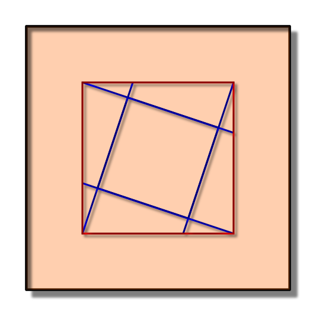

Vítejte na mých stránkách s příklady z planimetrie pro ZŠ. Pro procházení příkladů můžete využít níže umístěné obrázkové menu nebo zobrazení po kategoriích obtížnosti nahoře. Barva pozadí určuje obtížnost příkladu. Zelené jsou pro zopakování obvodů a obsahů geometrických tvarů. Žluté jsou podobně složité příkladům z přijímacích testů. Červené jsou podobné příkladům z matematických soutěží.
Pokud si nevíte s příklady rady, klikněte si na přiloženou nápovědu.
| Výběr příkladů | |||
|---|---|---|---|
|  | |||
| Barva | Vynecháno | Pokus | Správně | ||||||
|---|---|---|---|---|---|---|---|---|---|
| Zelená | -2 | 1 | 2 | ||||||
| Žlutá | 0 | 1 | 3 | ||||||
| Červená | 0 | 0 | 5 (poslední 10) | ||||||